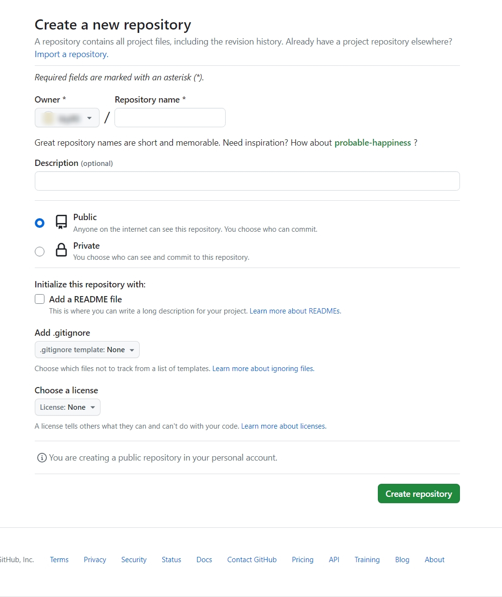

- HTML기초 배우기
- 줄바꿈 태그와 단락조절
- HTML이 중요한 이유
- 부모자식태그와 목차태그
- 문서의 구조와 자주쓰는 태그들
- 태그로 링크걸기
- 웹사이트 만들기
- 인터넷의 기본원리
- 웹호스팅 실습
웹호스팅 실습
웹서버를 직접 운영하기 위해선 우선 컴퓨터가 있어야 하고 컴퓨터가 냉장고처럼 항상 켜져 있어야 한다.
그리고 웹서버라는 프로그랩을 배워서 설치하고 인터넷을 통해서 외부로 정보를 전송할 수 있또록 설정해야 한다.
쉽지 않은 과정일 것이다.

그래서 이런일을 대행해주는 회사들이 있다.
인터넷에 연결된 컴퓨터 하나 하나를 호스트라고 한다. 이런 컴퓨터를 빌려주는 사업을 호스팅이라고 말한다.
웹서버를 전문적으로 빌려주는 비즈니스를 웹호스팅 업체라고 말하는 것이다.
수많은 웹 호스팅 업체가 있는데 무료, 유명한 서비스를 찾아보자.
깃허브(github)라는 서비스를 사용해서 홈페이지 만들기를 해볼 것이다.
깃허브 홈페이지 들어가기

다음과 같은 화면이 나올 것이다. 우리는 깃허브가 제공하는 여러 기능 중 웹호스팅 기능을 이용해서
우리의 홈페이지를 운영할 것이다.
우측상단의 sign up 을 눌러서 회원가입을 하고 로그인을 해준다.
그다음 저장소(repository)라는 것을 생성해야 한다.
저장소는 소스코드를 보관하는 곳이라고 생각하면 된다.
로그인 하게 되면 creat Repository 라는 버튼이 보일 것이다.
그것을 누르거나 우측 상단 + 버튼을 눌러서 new repository를 눌러준다.

repository name에는 프로젝트의 이름을 적어준다(예:WEB-1)
public(공개), private(비공개)는 저장소의 공개여부를 정하는 것이다.
공개로 해줘야 다른 사람들이 우리의 소스코드를 볼 수 있다.
공개로 설정 후 create repository 버튼을 눌러준다.
다음 화면이 나오게 되면 uploading an exisitng file 이라는 부분을 클릭해 준다.
작업한 파일을 드래그 하거나 choose your files 를 클릭해서 파일을 추가한다.
파일이 변경될 때마다 업로드를 해줘야 하기 때문에 아래 칸에는 변경된 내용을 적어준다.(꼭 적을 필요는 없다.)
commit changes버튼을 누르게 되면 파일이 업로드 된다.
업로드 된 파일의 목록이 보이게 된다.
그럼 이제 업로드한 웹페이지를 인터넷을 통해 서비스 해보자.
setting 버튼을 클릭한다.
사이드 바에서 pages를 클릭한다.
branch버튼을 눌러서 main을 선택하고 save버튼을 누른다.
다음과 같이 주소가 생성될 것이다.(당연히 각자 주소는 다르게 나올 것이다.)
주소로 들어가 보면 자신이 만든 웹페이지가 보이게 된다.
지금까지 우리가 한 일을 정리해 보자.
my는 우리 컴퓨터 이고 visitor은 우리 웹페이지를 보고 싶어 하는 사람이다.
우리의 컴퓨터는 현재로서 컨텐츠를 서비스 할 수 없다. 그래서 github의 pages기능을 이용했다.
github에 파일을 업로드하고 pages 기능을 활성하 함으로써 github의 서버 컴퓨터에 웹서버가 켜지게 되고
우리에게 웹서버의 주소를 알려준다.
이제 웹서버의 주소를 방문자에게 알려주면 방문자는 나의 컴퓨터가 아닌 github의 컴퓨터에 설치된
웹서버에 접속하게 된다.
웹서버를 직접 운영하는 것에 비해 웹호스팅을 이용하면 쉽다는 장점이 있지만
인터넷의 원리가 감춰져 있다는 단점이 있다.
그러나 현업에서 웹서버를 직접 운영하는 경우는 많지 않다.
웹서버를 운영하기 위해서는 많은 노하우가 필요하기 때문이다.
우리는 github를 사용했지만 미래에는 이 서비스를 이용하지 못할 수도 있다.
중요한 것은 github의 사용법이 아니라 스스로 필요한 웹호스팅을 찾아내는 능력이다.
우리는 HTML만으로 웹페이지를 만들었다. HTML은 웹브라우저가 해석하기 때문에
서버쪽에서 특별히 해 줄 일이 없다. 이런 특성을 정적(static)이라고 한다.
그렇기에 HTML만으로 만들어진 웹사이트를 호스팅하는 서비스 중에는 무료가 많다.
동적(dynamic)인 것들도 있다.
나중에 배우게 될 php, python, ruby, java와 같은 기술을 이용하려면 대체로 비용을 내야 한다.
(free static web hosting)이라 검색하면 현재 우리의 목적에 맞는 웹호스팅을 찾을 수 있을 것이다.
미래에는 많은 서비스 들이 없어졌을 수도 있고 더 좋은 서비스들이 생겨났을 수도 있다.
중요한 것은 검색을 통해 그러한 것들을 찾아낼 수 있는 능력이라는 것을 꼭 기억하자.